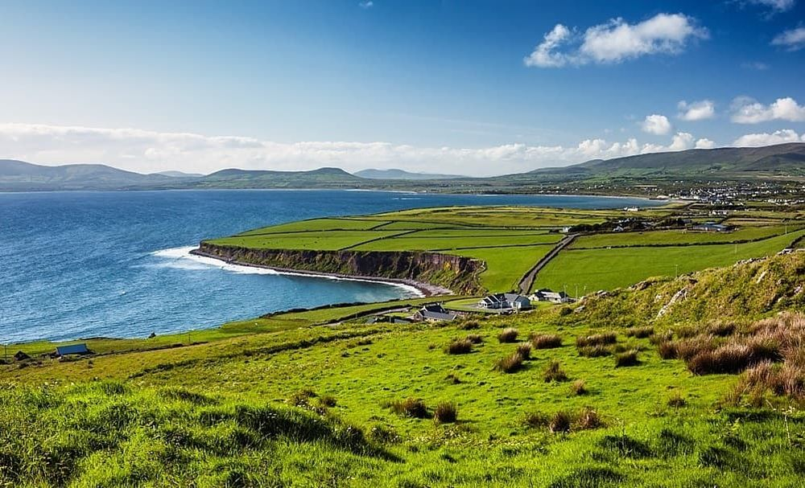

Descoperă Ring of Kerry - O călătorie scenică prin peisajele uimitoare ale Irlandei
Ring of Kerry reprezintă un traseu turistic scenic care oferă priveliști impresionante asupra naturii din Irlanda:
-

Gap of Dunloe - Trecere pitorească
Această defilare naturală face parte din traseul Ring of Kerry, oferind priveliști spectaculoase.
-

Molls Gap - Panorame magnifice
Un loc deosebit pentru a opri și admira priveliștile pitorești ale zonei.
-

Waterville - Stațiune liniștită
Un oraș pitoresc de pe coastă, cunoscut pentru frumusețea sa naturală.
-

Staigue Stone Fort - Istorie antica
Un fort de piatră bine conservat, care oferă o privire în istoria vechii Irlande.
-

Plaja Rossbeigh - Relaxare pe plajă
O plajă frumoasă unde puteți admira marea și peisajul înconjurător.
Concluzii
Ring of Kerry oferă o călătorie scenică prin unele dintre cele mai frumoase peisaje naturale ale Irlandei.